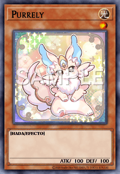
Purrely 3 copia(s) · CID 18003Galería completa del inventario documentado
Imágenes auténticas recuperadas de Konami Neuron o del archivo original, enlazadas por identificador oficial CID. Las cartas no documentadas físicamente no se añaden.
Main · 22 identidades
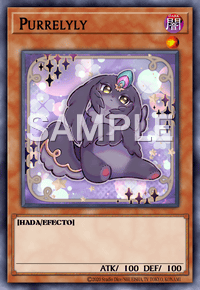
Purrelyly 2 copia(s) · CID 18481 Flor de Ceniza & Primavera Feliz
3 copia(s) · CID 12950
Flor de Ceniza & Primavera Feliz
3 copia(s) · CID 12950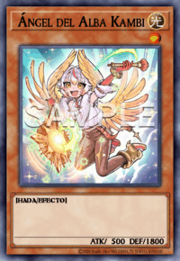
Ángel del Alba Kambi 3 copia(s) · CID 21338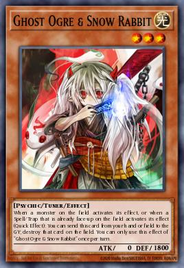
Hermana Fantasma & Conejo Espectral 2 copia(s) · CID 11708 Bella Fantasma & Mansión Embrujada
2 copia(s) · CID 13587
Bella Fantasma & Mansión Embrujada
2 copia(s) · CID 13587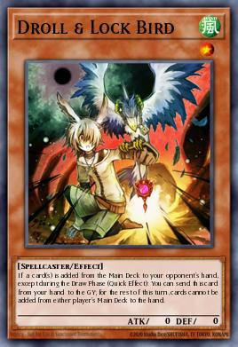
El Bufón y el Pájaro del Candado 3 copia(s) · CID 9279 Fuwalos Multivadora
3 copia(s) · CID 20500
Fuwalos Multivadora
3 copia(s) · CID 20500 Purulia Multivadora
3 copia(s) · CID 20206
Purulia Multivadora
3 copia(s) · CID 20206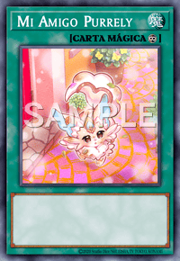
Mi Amigo Purrely 3 copia(s) · CID 18010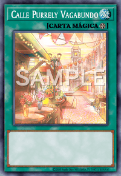
Calle Purrely Vagabundo 3 copia(s) · CID 18009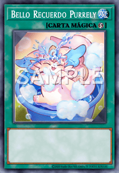
Bello Recuerdo Purrely 3 copia(s) · CID 18012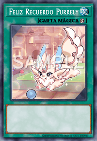
Feliz Recuerdo Purrely 3 copia(s) · CID 18011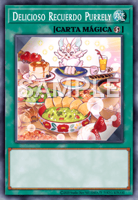
Delicioso Recuerdo Purrely 2 copia(s) · CID 18013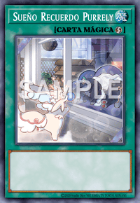
Sueño Recuerdo Purrely 2 copia(s) · CID 18524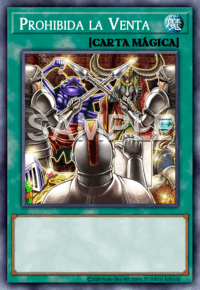
Prohibida la Venta 2 copia(s) · CID 16868 Olla de la Prosperidad
1 copia(s) · CID 15756
Olla de la Prosperidad
1 copia(s) · CID 15756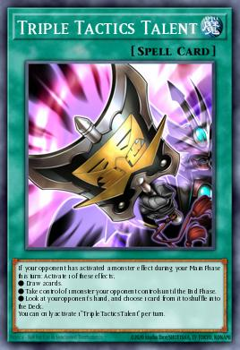
Talento de Tácticas Triples 1 copia(s) · CID 15296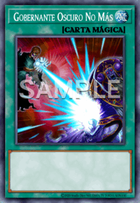
Gobernante Oscuro No Más 1 copia(s) · CID 14742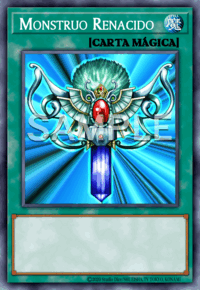
Monstruo Renacido 1 copia(s) · CID 4842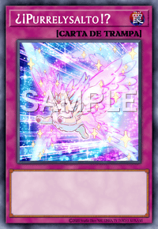
¿¡Purrelysaltó!?Oficial: ¿¡Purrelysalto!? 1 copia(s) · CID 18014 Infinito Temporal
1 copia(s) · CID 13631
Infinito Temporal
1 copia(s) · CID 13631Extra · 10 identidades
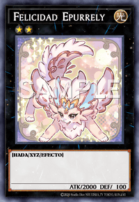
Felicidad Epurrely 2 copia(s) · CID 18004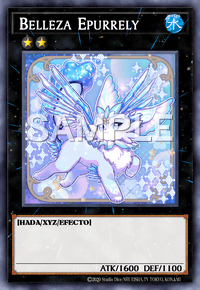
Belleza Epurrely 2 copia(s) · CID 18005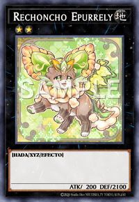
Rechoncho Epurrely 2 copia(s) · CID 18006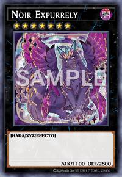
Noir Expurrely 3 copia(s) · CID 18008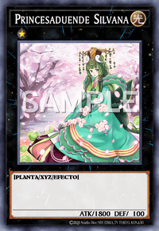
Princesaduende Silvana 1 copia(s) · CID 12027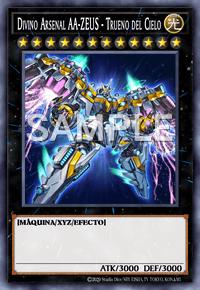
Divino Arsenal AA-ZEUS - Trueno del Cielo 1 copia(s) · CID 15524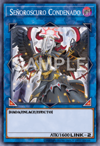
Señoroscuro Condenado 1 copia(s) · CID 14208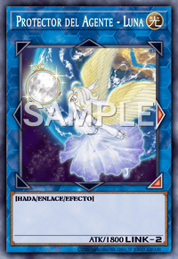
Protector del Agente - Luna 1 copia(s) · CID 16651 S:P Pequeña Caballera
1 copia(s) · CID 19188
S:P Pequeña Caballera
1 copia(s) · CID 19188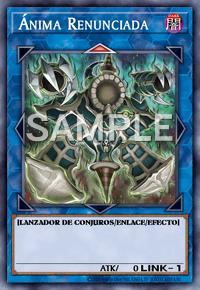
Ánima Renunciada 1 copia(s) · CID 13841Side · 4 identidades
 Artefacto Lancea
3 copia(s) · CID 11243
Artefacto Lancea
3 copia(s) · CID 11243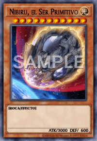
Nibiru, el Ser Primitivo 2 copia(s) · CID 14741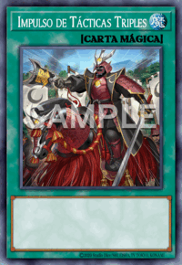
Impulso de Tácticas Triples 1 copia(s) · CID 18214 Llamado por la Tumba
1 copia(s) · CID 13619
Llamado por la Tumba
1 copia(s) · CID 13619Decisiones tácticas de este deck · V40
Estudia una situación de rival, luego abre las rutas ilustradas A09. No son resultados de simulador ni sustituyen las condiciones de la carta.
Probabilidades exactas de mano de cinco
- ≥1 Purrely o Purrelyly: 43.78% de coincidencia; resolución del efecto no garantizada.
- ≥1 Recuerdo (10 copias): 70.69% de coincidencia; resolución del efecto no garantizada.
- Purrely Y cualquier Recuerdo: 18.29% de coincidencia; resolución del efecto no garantizada.
- Purrely o Purrelyly Y cualquier Recuerdo: 28.33% de coincidencia; resolución del efecto no garantizada.
- ≥2 Recuerdos Rápidos en apertura: 27.58% de coincidencia; resolución del efecto no garantizada.
- ≥1 Mi Amigo: 28.65% de coincidencia; resolución del efecto no garantizada.
- ≥1 Kambi: 28.65% de coincidencia; resolución del efecto no garantizada.
- ≥1 Monstruo (Purrely/Purrelyly) y Mi Amigo: 10.86% de coincidencia; resolución del efecto no garantizada.
Rival que niega búsquedas
Si empiezas: Abrir con Purrelyly para Mi Amigo o Purrely para excavación, según mano.
Si vas segundo: Proteger Recuerdos clave; no declarar carta excavada antes de mirar 3.
Side físico: Side disponible no contiene una protección general garantizada para todas las búsquedas.
Riesgo: Droll rival impide otra adición del Deck a la mano después de activarse; Kambi no corrige esto.
Destierro intensivo
Si empiezas: Elegir Bello→Belleza como interacción si los GYs no sirven a Rechoncho.
Si vas segundo: Lancea del Side solo frena destierro turno rival; plan de respuesta específico.
Side físico: Lancea ×3.
Riesgo: Rechoncho necesita M/T existentes en GY para acelerar cinco materiales; no autoproduce recursos.
Combo 5+ invocaciones
Si empiezas: Acumular materiales de Noir o Belleza, no gastar dos de Noir por inercia.
Si vas segundo: Nibiru si el rival cumple cinco o más invocaciones y aún hay ventana útil.
Side físico: Nibiru ×2.
Riesgo: Nibiru deja Token rival; revisar respuestas a Nibiru antes de usar.
Monstruos resistentes establecidos
Si empiezas: Si empiezas, una Belleza con Bello hace negación rápida; no es negación de activación.
Si vas segundo: Gobernante Oscuro No Más abre campo, pero no deja hacer daño ese turno.
Side físico: Impulso ×1 Side, condicionado por efecto de monstruo rival.
Riesgo: No asumir que Impulso accede a Recuerdos Rápidos; son Quick-Play.
Retirada de Xyz / juego largo
Si empiezas: Mi Amigo y Calle preparan recuperar recursos si rival saca tu Xyz.
Si vas segundo: Reevaluar Noir de 5 vs desacoplar 2 y caer a 3, perdiendo inmunidad.
Side físico: Solo 7 cartas Side identificadas; 8 desconocidas.
Riesgo: No recuperar Recuerdos si tu Xyz sale por coste propio en vez de carta rival.
Backrow / negación continua
Si empiezas: Combinar Felicidad, Recuerdos y recursos de Calle según objetivos existentes.
Si vas segundo: ZEUS solo después de batalla Xyz; no es salida genérica turno 1.
Side físico: No hay Tormenta de Relámpagos identificada en su Side.
Riesgo: Kambi activa lock Hada, incompatible con Extra no Hada ese turno cuando usa su efecto.
Evaluar carta disponible, materiales, coste, zona y ventana; no asumir resolución sin respuesta del rival.
Guías visuales: rutas y variantes A09
Paneles por paso con imágenes originales por CID. Cada bloque es un apoyo didáctico al texto técnico completo del A09, no un replay; se respetan condiciones, materiales, límites, y las rutas no ejecutables están señaladas.
P-C01 · Belleza con respuesta de monstruo», dificultad básica
COMBOPunto de control: Bello debe estar aún en mano y llegar como material; la negación rápida exige ese material.
Antes de jugar: Purrely + Bello Recuerdo en mano; Belleza en Extra; Deck con 3 cartas excavables.
Regla: Purrely revela una Mágica Rápida que Belleza menciona; Belleza solo hace la negación RÁPIDA si Bello es material.
Si falla: Excavar 3 no garantiza obtener carta; si se pierde Bello en mano antes de revelarlo no hay invocación descrita.
Paso 01
Invoca Purrely de Normal.
Paso 02
Ofrece la activación opcional de excavación: mira 3 superiores y añade M/T Purrely solo si existe entre ellas; no contarla como garantizada.
Paso 03
En Main Phase revela Bello Recuerdo de mano para el otro efecto de Purrely.
Paso 04
Invoca Belleza Epurrely del Extra sobre Purrely y adjunta Bello desde la mano como material según el texto.
Paso 05
Conserva Belleza para seleccionar monstruo de efecto rival y negarlo por su efecto; como tiene Bello material, esa negación puede ser efecto rápido.
Situación hipotética descrita en A09; la cadena aún no fue ensayada en simulador.
P-C02 · Rechoncho a través del Cementerio», dificultad intermedia
COMBO_CONDICIONALPunto de control: El Delicioso debe estar realmente en GY; Rechoncho no inventa blancos de Magia/Trampa.
Antes de jugar: Purrelyly en mano/campo; Delicioso YA en GY; **2 M/T reales** en uno o ambos GY.
Regla: Purrelyly convierte Delicioso del GY en material; Rechoncho adjunta hasta 2 M/T de cualquier GY.
Si falla: Si solo 1 M/T elegible, el final es 3 materiales; Noir cinco no resulta aún.
Paso 01
Invoca Purrelyly de Normal o Especial.
Paso 02
Si su efecto de búsqueda resuelve, añade una carta Purrely que no sea Mágica Rápida, de acuerdo con existencia en Deck.
Paso 03
Activa el efecto de Purrelyly que selecciona Delicioso Recuerdo en GY.
Paso 04
Xyz Invoca Rechoncho Epurrely del Extra usando Purrelyly y adjunta Delicioso como material.
Paso 05
Por el efecto de Rechoncho, selecciona y adjunta hasta 2 Magias/Trampas existentes de los GYs. Con dos válidas, Rechoncho termina con 4 materiales.
Situación hipotética descrita en A09; la cadena aún no fue ensayada en simulador.
P-C03 · Cinco materiales → Noir permanente», extensión de P-C02
EXTENSION_DE_P-C02Punto de control: EXTENSIÓN de P-C02: no contar como combo autónomo; cinco materiales antes de Noir.
Antes de jugar: Estado de P-C02 ya alcanzó Rechoncho con 4 materiales + 1 Recuerdo rápido en mano.
Regla: Al activar un Recuerdo, Rechoncho puede adjuntar esa carta del campo; Noir alterno requiere Rango2 con ≥5 materiales.
Si falla: Si el Recuerdo no se adjunta o fue negada la activación, NO invocar Noir por su procedimiento alternativo.
Paso 01
Activa el Recuerdo Rápido en ventana legal y aplica su texto sobre blanco legal cuando corresponda.
Paso 02
Encadena/activa el efecto rápido pertinente de Rechoncho al activar ese Recuerdo (respetando la regla de encadenamiento) y adjunta esa carta en campo como material según el efecto.
Paso 03
Ahora Rechoncho tiene 5 materiales (si los pasos anteriores resolvieron y no perdió ninguno).
Paso 04
Xyz Invoca Noir Expurrely Rango7 utilizando ese Rango2 de cinco materiales, transfiriendo los cinco.
Paso 05
Noir tendrá protección de efectos activados rivales por sus 5 materiales. Antes de gastar 2 para devolver una carta al fondo, decide si vale la pena quedar con 3 y perder protección.
Situación hipotética descrita en A09; la cadena aún no fue ensayada en simulador.
P-C04 · Noir temporal por trampa», dificultad media
TRANSFORMACION_PREPARADAPunto de control: TRANSFORMACIÓN por trampa previamente colocada; Noir temporal puede salir sin inmunidad.
Antes de jugar: Xyz Purrely en campo; trampa ¿¡Purrelysaltó!? previamente Colocada o activable legalmente.
Regla: La trampa cambia de Rango, transfiere materiales y exige devolver el nuevo Xyz en la End Phase del turno siguiente.
Si falla: Con menos de cinco materiales Noir es removible por efectos activados; es transformación temporal, no acceso permanente.
Paso 01
Espera una ventana de activación legal de la trampa y selecciona el Xyz Purrely propio.
Paso 02
Resuelve la trampa e Invoca Noir Expurrely usando la Xyz como material, conservando materiales del monstruo objetivo bajo el nuevo Xyz.
Paso 03
Cuenta los materiales de verdad. Con menos de cinco, Noir no es inmune a efectos activados.
Paso 04
Anota el retorno obligatorio de Noir al Extra en la End Phase del siguiente turno, según el texto.
Situación hipotética descrita en A09; la cadena aún no fue ensayada en simulador.
P-C05 · Ruta Felicidad: buscar tras combate», dificultad media
COMBO_CONDICIONALPunto de control: Felicidad solo busca tras haber combatido; ZEUS depende de batalla Xyz.
Antes de jugar: Purrely + Feliz Recuerdo; Felicidad Extra; rival con combate posible.
Regla: Felicidad busca al FINAL del Damage Step si combatió; AA-ZEUS requiere batalla de Xyz previa.
Si falla: Si no hay batalla legal, no buscar con Felicidad por esa vía ni poner ZEUS automáticamente.
Paso 01
Normal Purrely; resuelve la excavación solo si tiene objetivo válido entre 3.
Paso 02
Revela Feliz Recuerdo desde mano y Xyz Invoca Felicidad Epurrely usando Purrely y el Recuerdo como materiales.
Paso 03
Durante Battle, declara un ataque legal con Felicidad; si la carta batalló, al final del Damage Step puede añadir una carta Purrely del Deck.
Paso 04
Si tiene Feliz como material, considera también reducir a la mitad el ATK de un monstruo boca arriba legal según su efecto.
Paso 05
Solo después del combate considera AA-ZEUS si hay turno/condición Xyz de batalla y espacio de Extra legal; no asumir daño letal.
Situación hipotética descrita en A09; la cadena aún no fue ensayada en simulador.
P-V01 · P-V01
VARIANTEPunto de control: Revisar las precondiciones y el estado final en la ficha completa A09.
Antes de jugar: Purrelyly logra buscar Mi Amigo; deck dispone de 3 revelables; pagar 500 LP.
Regla: Mi Amigo revela 3 y rival escoge AL AZAR una de ellas; no seleccionas el resultado.
Si falla: Si Droll ya se aplicó después de búsqueda de Purrelyly, no añadir una segunda carta del Deck a mano.
Paso 01
Purrelyly encuentra Mi Amigo (no Rápida) y este revela tres Purrely del Deck: el rival elige al azar. Si hay Droll rival activo, no completar búsquedas posteriores a la primera adición.
Situación hipotética descrita en A09; la cadena aún no fue ensayada en simulador.
P-V02 · P-V02
VARIANTEPunto de control: Revisar las precondiciones y el estado final en la ficha completa A09.
Antes de jugar: Rechoncho obtenido por P-C02 pero solo 1 M/T válida en todos los cementerios.
Regla: Rechoncho queda con 3 materiales, con 1 Recuerdo más solo llega a 4; no activa condición de Noir alterno.
Si falla: No inventar una segunda M/T en GY; esperar Stray Street End Phase o otra carta legal para llegar a 5.
Paso 01
con Rechoncho y un solo blanco M/T en GY, obtiene como máximo tres materiales antes del Recuerdo en mano; tras adjuntar uno queda cuatro, no llega a Noir por alternativa de cinco.
Situación hipotética descrita en A09; la cadena aún no fue ensayada en simulador.
P-V03 · P-V03
VARIANTEPunto de control: Noir de cinco que desacopla dos queda con tres y pierde inmunidad.
Antes de jugar: Noir con exactamente 5 materiales, 1 carta rival retirable, 2 desacoplables.
Regla: Noir desacopla 2 como coste y queda con 3; protección frente a efectos activados exige ≥5 al momento relevante.
Si falla: Si el rival encadena respuesta tras perder materiales puede afectarlo; decidir conservarlos según amenaza.
Paso 01
si Noir de cinco materiales gasta dos para devolver una carta al fondo, deja tres; su protección de ≥5 ya no aplica. No aconsejar usar el efecto por inercia frente a eliminación rival.
Situación hipotética descrita en A09; la cadena aún no fue ensayada en simulador.
Estudio de la construcción: A01–A10
STATION X | Purrely | análisis A01–A10 v02 | 17-11-2026
CRITERIO DEL INVENTARIO FÍSICO (V41): Las cartas y sus cantidades se conservan exactamente como fueron documentadas. El análisis A01–A10 se basa en sus efectos, materiales, ventanas, zonas, cadenas y recursos; no evalúa listas externas de prohibidas o limitadas. No se atribuyen partidas ni simulaciones ejecutadas a estos análisis documentales.
CORTE IMPORTABLE V37 (17-11-2026). Fotos reales 36/36 correspondientes al 100 % de las identidades identificadas físicamente. Los recuentos antiguos de
FOTO_PENDIENTEdentro de análisis V35/V36 son históricos y quedan sustituidos por este control. A01–A10 documentados; 0 replays y sin certificación de simulación. Inventario sin cambios. Guía visual: abrir.
ACTUALIZACIÓN V36 — FOTOGRAFÍAS REALES 36/36 (100 % del inventario identificado). Las cifras de imágenes pendientes mencionadas en los apartados V35 son históricas. Ver actualización, galería visual y manifiesto. Los combos son análisis escritos, no simulaciones comprobadas; Side físico conservado en 7 cartas.
DOCUMENTO DE ESTUDIO, NO REPORTE DE SIMULADOR. Conserva las 70 cartas físicamente identificadas: Main 48, Extra 15, Side 7. No se añadieron las 8 cartas que faltarían para un Side de 15. Referencia NUEVO_14 documental; el ID real de Station X se asigna mediante consulta, sin sobrescribir decks existentes.
Actualización V35 solo A01–A05: leer profundización A01–A05 integrada. Se recuperaron 10 fotos auténticas por CID de otros decks del maestro; quedan 26/36 pendientes. El contenido A06–A10 no fue revalidado ni modificado.
TABLERO DE AVANCE A01–A10
| Apartado | Estado verificable | Entrega | Límite pendiente |
|---|---|---|---|
| A01 Identidad, objetivo y estilo | ANALIZADO | Control Xyz, aceleración de materiales y recursos de Recuerdos | Sin tasa de victoria medida |
| A02 Inventario de entrada y manos | DOCUMENTADO | 48/15/7; tipos, manos H01–H08 | Aprobación visual del dueño |
| A03 Todas las cartas y cantidades | DOCUMENTADO | 36 identidades en tres zonas, 70 copias | CIDs globales por cerrar |
| A04 Fuentes y fotos | IMÁGENES CERRADAS V37 | 36/36 fotos auténticas por CID; inventario sin cambios | Aprobación de Miguel y prueba del importador real pendientes |
| A05 Funciones por carta | ANALIZADO | 36/36 identidades clasificadas con utilidad/alerta | Contrastar cada texto de cartas genéricas |
| A06 Sinergia y Extra | ANALIZADO | 10 identidades del Extra, accesos y dependencias | No todas accesibles desde mano mínima |
| Condiciones de Invocación y efectos del texto oficial | ANALIZADO, CON ALERTAS | Ventanas, efecto de materiales y conflictos de formato | Falta simulación y validación exhaustiva |
| A08 Decisiones, primero/segundo, Side | ANALIZADO | Planes por rival y ocho manos | Falta medir matchups reales |
| A09 Combos | 5 RUTAS DOCUMENTALES + 3 VARIANTES | Entradas, pasos, salidas y límites | 0 reproducciones en simulador / 0 replays |
| A10 Guías visuales | GUÍAS VISUALES V37 | Guía HTML local y 36/36 fotos disponibles | Combos y cadenas pendientes de contrastar en simulador |
No confundir «documentado» con «probado». A01–A10 están desarrollados como estudio; cero rutas certificadas en cliente de juego. No se asigna puntuación competitiva arbitraria.
A01 — Identidad y plan de victoria
Plan principal: transformar a Purrely/Purrelyly y los Recuerdos rápidos en Xyz Rango 2, añadir cartas como materiales y, cuando realmente se llegue a cinco o más, superponer Noir Expurrely de Rango 7. Una alternativa es la trampa ¿¡Purrelysaltó!?, que permite un cambio de Rango temporal con su propia condición de regreso al Extra.
- Primero: obtener una Xyz pequeña (Rechoncho para recursos, Belleza para respuesta a monstruos) y conservar Recuerdos activables; Noir grande es el techo, no una salida garantizada.
- Segundo: elegir entre Belleza para negar, Felicidad para presión/recuperar cartas y AA-ZEUS como limpieza postcombate si se cumple su requisito; Gobernante Oscuro No Más puede desactivar monstruos rivales antes de desarrollar.
- Juego medio: reciclar recursos con Mi Amigo Purrely cuando el rival retire tus Xyz por sus cartas; la mano ganada no debe asumirse antes de que ocurra el disparador.
- Debilidades reales: mano saturada de handtraps sin Recuerdos; coste de descarte; depender de que el rival seleccione al azar una carta entre tres mostradas; ataque a efectos de Purrely al invocar; demasiadas cartas Main (48) diluyen motores respecto de una construcción menor.
A02 — Contexto, zonas, nombres y ocho manos de práctica
El estudio preserva el inventario registrado y evalúa el efecto y los materiales de las cartas, no listas externas.
| Mano inicial para entrenar | Objetivo | Decisión contextual |
|---|---|---|
| H01 Purrely + Bello Recuerdo + tres interacciones | Construir Belleza | El efecto de Purrely excava, NO busca una carta garantizada |
| H02 Purrelyly + Mi Amigo Purrely + Sueño Recuerdo | Preparar recursos | Purrelyly sí puede buscar carta no Rápida |
| H03 Purrelyly + Delicioso Recuerdo + descarte | Llegar a Rechoncho | Colocar primero Recuerdo en GY si se precisa su efecto de Purrelyly |
| H04 Purrely + Feliz Recuerdo + carta descartable | Felicidad Xyz | No confundir proteger una carta con negar activaciones |
| H05 Purrelyly + Recuerdo ya en GY + otro Recuerdo | Continuar | Demostrar origen del Recuerdo en GY |
| H06 Solo handtraps y Prohibida la Venta | Defensa/pase | Brick del motor; no declarar Xyz |
| H07 Rechoncho con dos materiales + dos M/T en GYs + Recuerdo Rápido | Aumentar a cinco | Confirmar efecto disponible y zonas para Noir |
| H08 Xyz Purrely + ¿¡Purrelysaltó!? colocada anteriormente | Noir temporal | Trap no activable el mismo turno que se coloca, salvo excepción explícita |
A03 — Inventario físico íntegro
MAIN DECK — MONSTRUOS (24)
| Copias | Carta |
|---|---|
| 3 | Purrely |
| 2 | Purrelyly |
| 3 | Flor de Ceniza & Primavera Feliz |
| 3 | Ángel del Alba Kambi |
| 2 | Hermana Fantasma & Conejo Espectral |
| 2 | Bella Fantasma & Mansión Embrujada |
| 3 | El Bufón y el Pájaro del Candado |
| 3 | Fuwalos Multivadora |
| 3 | Purulia Multivadora |
MAIN DECK — MÁGICAS (22)
| Copias | Carta |
|---|---|
| 3 | Mi Amigo Purrely |
| 3 | Calle Purrely Vagabundo |
| 3 | Bello Recuerdo Purrely |
| 3 | Feliz Recuerdo Purrely |
| 2 | Delicioso Recuerdo Purrely |
| 2 | Sueño Recuerdo Purrely |
| 2 | Prohibida la Venta |
| 1 | Olla de la Prosperidad |
| 1 | Talento de Tácticas Triples |
| 1 | Gobernante Oscuro No Más |
| 1 | Monstruo Renacido |
MAIN DECK — TRAMPAS (2)
| Copias | Carta |
|---|---|
| 1 | ¿¡Purrelysaltó!? |
| 1 | Infinito Temporal |
EXTRA DECK (15)
| Copias | Carta |
|---|---|
| 2 | Felicidad Epurrely |
| 2 | Belleza Epurrely |
| 2 | Rechoncho Epurrely |
| 3 | Noir Expurrely |
| 1 | Princesaduende Silvana |
| 1 | Divino Arsenal AA-ZEUS - Trueno del Cielo |
| 1 | Señoroscuro Condenado |
| 1 | Protector del Agente - Luna |
| 1 | S:P Pequeña Caballera |
| 1 | Ánima Renunciada |
SIDE DECK (7)
| Copias | Carta |
|---|---|
| 3 | Artefacto Lancea |
| 2 | Nibiru, el Ser Primitivo |
| 1 | Impulso de Tácticas Triples |
| 1 | Llamado por la Tumba |
Suma controlada: monstruos 24 + mágicas 22 + trampas 2 = Main 48; Extra 15; Side 7; total 70. Side no completado artificialmente.
A04 — Evidencias, fotografías e identificadores
- Original: listado enviado por Miguel el 17-11-2026; aún falta cotejo de edición/imagen.
- Texto oficial Purrelyly: https://www.db.yugioh-card.com/yugiohdb/card_search.action?cid=18481&ope=2&request_locale=en
- Texto oficial Rechoncho: https://www.db.yugioh-card.com/yugiohdb/card_search.action?cid=18006&ope=2&request_locale=en
- Texto oficial Noir grande: https://www.db.yugioh-card.com/yugiohdb/card_search.action?cid=18008&ope=2&request_locale=en
- Texto oficial trampa: https://www.db.yugioh-card.com/yugiohdb/card_search.action?cid=18014&ope=2&request_locale=en
- Actualización A04 V35: imágenes reutilizables por CID 10/36 (
12950,11708,13587,9279,20500,20206,15756,15296,13619,13631); 26 faltantes. Se copiaron de otros decks existentes en este maestro, sin alterar su contenido; los demás CIDs y textos siguen en revisión. Véaseprofundización A01–A05 integrada. No se usa arte sintético.
A05 — Función, uso y propósito de cada identidad
| Carta / copias | Uso concreto | Precaución |
|---|---|---|
| Purrely ×3 | Normal/Especial: excava 3 y puede añadir una M/T Purrely; revela Recuerdo Rápido para Xyz que lo mencione | Excavar no garantiza que aparezca; necesita Recuerdo revelable para Xyz |
| Purrelyly ×2 | Busca carta Purrely NO Mágica Rápida al invocarse; Xyz con Recuerdo Rápido del GY, adjuntándolo | Requiere objetivo en GY; los dos efectos tienen su límite |
| Flor de Ceniza ×3 | Cortar búsqueda, envío desde Deck o invocación desde Deck según texto de activación | Guardar para punto crítico rival |
| Ángel del Alba Kambi ×3 | Hada LUZ Nivel 1: puede Invocarse Especial desde mano si no controlas monstruos o todos los propios son Hada; sacrifica Hadas, incluso a sí misma, para Invocar desde el Deck una Hada cuyo Nivel iguale la suma de Niveles originales sacrificados. CID oficial 21338. | La activación del efecto de sacrificio restringe tus Invocaciones Especiales del turno a monstruos Hada; por tanto, no combinar ese turno con Xyz que no sean Hada o Links ajenos al Tipo. No es una negación. |
| Hermana Fantasma & Conejo Espectral ×2 | Destruir carta en campo cuando corresponde a su activación de efecto | Destrucción NO equivale a negar ese efecto |
| Bella Fantasma & Mansión Embrujada ×2 | Interacción frente a jugadas de Cementerio según efecto | Comparar activación y ventana |
| El Bufón y el Pájaro del Candado ×3 | Restringe nuevas adiciones del Deck a mano tras primer añadido | También puede bloquear nuestras búsquedas según turno/contexto |
| Fuwalos Multivadora ×3 | Handtrap de presión sobre invocaciones rivales cubiertas por su texto | No garantiza robo incondicional |
| Purulia Multivadora ×3 | Handtrap para patrón de invocación que señale su texto | Separar de Fuwalos, confirmar condición exacta |
| Mi Amigo Purrely ×3 | Pagar 500 LP y revelar 3 Purrely (excluye misma carta); recupera Recuerdos si Xyz sale por rival | Elección aleatoria del oponente, no búsqueda determinista |
| Calle Purrely Vagabundo ×3 | Protección/recursos del campo Purrely y ventaja cuando se pierde Xyz | Verificar duración de protección al objetivo |
| Bello Recuerdo ×3 | Protege próximo daño? No: la versión Pretty otorga LP a ambos y puede traer Purrely con descarte | Belleza gana efecto rápido con este material |
| Feliz Recuerdo ×3 | Protección contra primera destrucción por efecto hasta próximo turno; con descarte invoca Purrely | Hace de material para Felicidad, no asegura victoria |
| Delicioso Recuerdo ×2 | Evita destrucción por batalla a monstruo elegido; descarte opcional para traer Purrely | Material da +300 por material; permite Rechoncho |
| Sueño Recuerdo ×2 | Evita próximo daño de batalla/efecto; opción descarte para traer Purrely | Como material proporciona robo en Standby rival |
| Prohibida la Venta ×2 | Bloqueo nominal de carta específica (Sales Ban), mitigación contextual | Restricción simétrica de usos del nombre también afecta al usuario; revisar texto |
| Olla de la Prosperidad ×1 | Filtra excavación a cambio de desterrar Extra boca abajo | Sacrifica opciones Xyz; no desterrar Noir/Plump claves a ciegas |
| Talento de Tácticas Triples ×1 | Respuesta si se cumplen efectos de monstruo rival en Main | Requiere materiales, zona y ventana de efecto comprobables; ruta documental condicionada |
| Gobernante Oscuro No Más ×1 | Neutraliza efectos de monstruos del rival boca arriba al comenzar remontada | No permite daño rival ese turno |
| Monstruo Renacido ×1 | Recuperar monstruo del GY si destino legal | No otorga materiales extra automáticamente al Xyz |
| ¿¡Purrelysaltó!? ×1 | Xyz Purrely de rango diferente sobre Xyz Purrely existente | Regresa al Extra en End Phase del siguiente turno |
| Infinito Temporal ×1 | Niega efecto de monstruo en campo, con posibles columnas de M/T si colocada | Desde mano solo con campo propio vacío, según texto |
| Felicidad Epurrely ×2 | Rango 2: batalla y búsqueda Purrely; reaccionar con Recuerdos Rápidos | No se invoca directamente con 1 Level1 sin efecto habilitador |
| Belleza Epurrely ×2 | Rango 2: negar monstruo, rápido si tiene Bello Recuerdo como material | Sin ese material la ventana cambia |
| Rechoncho Epurrely ×2 | Rango 2: adjuntar hasta 2 M/T de GYs y Recuerdos Rápidos; escalar material | Solo si hay blancos válidos en GY |
| Noir Expurrely ×3 | Rango 7: protección con ≥5 materiales y devolución al fondo gastando 2 | La protección se pierde bajo 5; rápido con Purrely Level1 material |
| Princesaduende Silvana ×1 | Xyz de nivel 1 para excavar y posible extensión Planta, uso técnico | Necesita dos monstruos Nivel 1 simultáneos; no siempre aporta al plan |
| Divino Arsenal AA-ZEUS ×1 | Xyz postcombate y limpieza general del campo | Necesita que Xyz batalle ese turno y recursos para su efecto |
| Señoroscuro Condenado ×1 | Link de tributo/intercambio para romper obstáculo si materiales legales | Comprobar 2 Hadas y coste adicional al activarlo |
| Protector del Agente - Luna ×1 | Link de Hadas para ganar acceso/valor | No asumir búsquedas Agente si no hay objetivos en Main |
| S:P Pequeña Caballera ×1 | Link2 de interacción temporal, reacción al rival | Necesita 2 efectos; su efecto de entrada depende de usar Extra como material |
| Ánima Renunciada ×1 | Link1 desde un Nivel1 no ficha para absorber monstruo en zona apuntada | Importa colocar bien la zona, no es removal universal |
| Artefacto Lancea ×3 | Side: interrumpir destierro rival durante su turno | Puede impedir nuestras jugadas que destierran si se solapa el turno |
| Nibiru ×2 | Side: castigar secuencias rivales de múltiples invocaciones | Entrega token al rival; calcular ATK/DEF resultantes |
| Impulso de Tácticas Triples ×1 | Side: acceder a Magia/Trampa Normal según condición | No garantiza acceso a Recuerdos Rápidos |
| Llamado por la Tumba ×1 | Side: negar monstruo en GY/handtrap por ventana válida | Requiere materiales, zona y ventana de efecto comprobables; ruta documental condicionada |
A06 — Matriz de sinergias y acceso REAL al Extra
| Origen | Relación/condición | Destino / beneficio |
|---|---|---|
| Purrely + Bello Recuerdo en mano | Mostrar Bello en el efecto de campo, materializar ambos | Belleza (R2), puede negar rápido por material Bello |
| Purrely + Delicioso en mano | Mostrar Delicioso | Rechoncho (R2) con efecto rápido de adjuntar M/T de GY |
| Purrely + Feliz en mano | Mostrar Feliz | Felicidad (R2) para batalla/búsqueda |
| Purrelyly + Delicioso en GY | Efecto Purrelyly selecciona Delicioso en GY | Rechoncho (R2) con Delicioso como material |
| Rechoncho + 2 M/T válidas en GY | Adjuntar ambas | Gana 2 materiales más; si los totales lo permiten, Noir |
| Cualquier Purrely R2 + Recuerdo Rápido activo | Efecto propio hasta 3 veces/turno tras activar carta | Puede agregar como material el propio Recuerdo del campo, conforme texto |
| Rank2 con 5+ materiales | Invocación Xyz alternativa impresa en Noir | Noir R7 conservando materiales, ya protegido si 5+ |
| Purrely R2 + ¿¡Purrelysaltó!? preparada | Trampa selecciona Xyz Purrely | Noir R7 temporal incluso sin cinco; con menos de cinco NO tendrá protección |
| Cualquier Xyz que haya batallado + ZEUS en Extra | Invocación alternativa postbatalla | Limpieza; no es parte automática del combo inicial |
| 2 Level1 simultáneos + Princesaduende | Overlay Xyz Nivel1 | Jugada lateral, puede competir con conservar Level1 para Xyz Purrely |
Los 15 slots Extra están clasificados en A05; no todos son parte del motor: 2 Felicidad, 2 Belleza, 2 Rechoncho, 3 Noir = 9 slots Purrely, más 6 utilitarios independientes. No hay Epurrely Noir Rango 2; prohibido crear rutas que la requieran.
A07 — Reglas, cadenas y requisitos de los efectos
- Purrely no «busca» una M/T garantizada: excava las tres superiores; si no sale una M/T Purrely elegible, no añade.
- Purrelyly no busca cualquier Recuerdo: su primer efecto excluye Mágicas Rápidas; el segundo necesita un Recuerdo Rápido ya en Cementerio.
- Rechoncho solo adjunta M/T que estén de verdad en GYs; su modo rápido requiere Delicioso como material.
- Noir por superposición normal: Rank2 con cinco o más materiales. Noir por trampa: rango distinto, se remite temporalmente al Extra; ninguna vía da materiales que no existan.
- Protección Noir frente a efectos activados del rival exige ≥5 materiales al momento pertinente. Si desacoplas dos y baja a cuatro, queda expuesto.
- Noir devuelve al fondo gastando dos materiales y selecciona carta del campo rival o su GY; la ventana es rápida si mantiene un Purrely Nivel1 como material.
- Mi Amigo muestra tres y la selección que se añade es aleatoria por elección del rival. No afirmar «busco Delicioso» si muestras tres nombres distintos.
- Trampas normalmente se colocan primero; ¿¡Purrelysaltó!? no se usa sin turno de preparación.
- Recursos verificables: no atribuir acciones a cartas ausentes, no dar por garantizada la excavación y comprobar materiales de Xyz y activaciones por nombre.
- Ash/Droll/Imperm: diferenciar efectos activados, costes, búsqueda del Deck y adición a mano; perder una búsqueda no elimina por sí solo las cartas previamente obtenidas.
A08 — Decisiones, amenazas y Side real
| Situación | Prioridad práctica | Evitar |
|---|---|---|
| Primero + Delicioso + Level1 | Preparar Rechoncho y acumular materiales | Prometer Noir sin cuenta exacta ≥5 |
| Primero + Bello + Level1 | Belleza con negación rápida | Olvidar que requiere Bello como material |
| Segundo vs monstruos establecidos | Gobernante Oscuro No Más o Belleza según ventana | Suponer que Gobernante Oscuro deja infligir daño |
| Segundo vs magia/trampa | Felicidad puede devolver M/T rival al jugar Recuerdos Rápidos | Confundir devolución con destrucción |
| Rival remueve Xyz por efecto | Revisar activación de Mi Amigo y Calle | Recuperar Recuerdos antes de que se cumpla disparador |
| Rival centrado en destierro | Meter Lancea, según patrón de turno rival | Interrumpir sin identificar dependencia rival |
| Rival invoca 5 o más | Nibiru en ventana válida | Lanzarlo antes o pasar una protección rival |
| Rival de negaciones con mano sin motor | Conservar piezas, pasar/defender y jugar siguiente turno | Inventar starter cuando no hay Purrely/Recuerdo |
Control documental: respetar los materiales, costes, zonas, ventanas, límites por turno y recursos del inventario físico; no se atribuyen simulaciones ejecutadas.
Control documental: respetar los materiales, costes, zonas, ventanas, límites por turno y recursos del inventario físico; no se atribuyen simulaciones ejecutadas.
A09 — Rutas de juego numeradas (documentales, sin simulación)
P-C01 — «Belleza con respuesta de monstruo», dificultad básica
Entrada: Purrely en mano; Bello Recuerdo Purrely (Pretty) en mano; Extra contiene Belleza. Campo propio sin monstruos; no se presupone resultado de excavación.
- Invoca Purrely de Normal.
- Ofrece la activación opcional de excavación: mira 3 superiores y añade M/T Purrely solo si existe entre ellas; no contarla como garantizada.
- En Main Phase revela Bello Recuerdo de mano para el otro efecto de Purrely.
- Invoca Belleza Epurrely del Extra sobre Purrely y adjunta Bello desde la mano como material según el texto.
- Conserva Belleza para seleccionar monstruo de efecto rival y negarlo por su efecto; como tiene Bello material, esa negación puede ser efecto rápido. Salida: Belleza Xyz con Purrely y Bello como materiales; Normal consumida. Fallo: si Bello ya no está en mano al revelar o niegan el efecto de Purrely, no está demostrada la Xyz.
P-C02 — «Rechoncho a través del Cementerio», dificultad intermedia
Entrada explícita: Purrelyly en mano; Delicioso Recuerdo previamente en GY por un efecto lícito; 2 M/T válidas adicionales en uno o ambos GYs; Extra contiene Rechoncho. No se atribuye al rival ninguna M/T gratuita.
- Invoca Purrelyly de Normal o Especial.
- Si su efecto de búsqueda resuelve, añade una carta Purrely que no sea Mágica Rápida, de acuerdo con existencia en Deck.
- Activa el efecto de Purrelyly que selecciona Delicioso Recuerdo en GY.
- Xyz Invoca Rechoncho Epurrely del Extra usando Purrelyly y adjunta Delicioso como material.
- Por el efecto de Rechoncho, selecciona y adjunta hasta 2 Magias/Trampas existentes de los GYs. Con dos válidas, Rechoncho termina con 4 materiales. Salida: Rechoncho 4 materiales en este escenario. No se convierte aún en Noir. Si no hay dos blancos, material real menor.
P-C03 — «Cinco materiales → Noir permanente», extensión de P-C02
Entrada: salida exacta P-C02 con 4 materiales, un Recuerdo Rápido adicional en mano activable y Rechoncho aún en campo; Noir en Extra.
- Activa el Recuerdo Rápido en ventana legal y aplica su texto sobre blanco legal cuando corresponda.
- Encadena/activa el efecto rápido pertinente de Rechoncho al activar ese Recuerdo (respetando la regla de encadenamiento) y adjunta esa carta en campo como material según el efecto.
- Ahora Rechoncho tiene 5 materiales (si los pasos anteriores resolvieron y no perdió ninguno).
- Xyz Invoca Noir Expurrely Rango7 utilizando ese Rango2 de cinco materiales, transfiriendo los cinco.
- Noir tendrá protección de efectos activados rivales por sus 5 materiales. Antes de gastar 2 para devolver una carta al fondo, decide si vale la pena quedar con 3 y perder protección. Salida: Noir ≥5 materiales, con protección al entrar; no se promete conservarla tras uso. Interrupción: si se niega el enganche del Recuerdo y permanece con 4, no se puede aplicar esta invocación alternativa.
P-C04 — «Noir temporal por trampa», dificultad media
Entrada: un Xyz Purrely en campo; ¿¡Purrelysaltó!? colocada desde turno anterior y legalmente activable; Noir Rango7 en Extra; se puede seleccionar el Xyz.
- Espera una ventana de activación legal de la trampa y selecciona el Xyz Purrely propio.
- Resuelve la trampa e Invoca Noir Expurrely usando la Xyz como material, conservando materiales del monstruo objetivo bajo el nuevo Xyz.
- Cuenta los materiales de verdad. Con menos de cinco, Noir no es inmune a efectos activados.
- Anota el retorno obligatorio de Noir al Extra en la End Phase del siguiente turno, según el texto. Salida: Noir temporal; no confundir con la ruta permanente P-C03 ni decir «Noir protegido» sin cinco materiales.
P-C05 — «Ruta Felicidad: buscar tras combate», dificultad media
Entrada: Purrely en mano, Feliz Recuerdo en mano, Felicidad R2 en Extra; objetivo de batalla alcanzable. Depende de que el combate ocurra.
- Normal Purrely; resuelve la excavación solo si tiene objetivo válido entre 3.
- Revela Feliz Recuerdo desde mano y Xyz Invoca Felicidad Epurrely usando Purrely y el Recuerdo como materiales.
- Durante Battle, declara un ataque legal con Felicidad; si la carta batalló, al final del Damage Step puede añadir una carta Purrely del Deck.
- Si tiene Feliz como material, considera también reducir a la mitad el ATK de un monstruo boca arriba legal según su efecto.
- Solo después del combate considera AA-ZEUS si hay turno/condición Xyz de batalla y espacio de Extra legal; no asumir daño letal. Salida: acceso a búsqueda posbatalla o a ruta ZEUS condicional, no tablero de turno1 asegurado.
Variantes importantes
- P-V01: Purrelyly encuentra Mi Amigo (no Rápida) y este revela tres Purrely del Deck: el rival elige al azar. Si hay Droll rival activo, no completar búsquedas posteriores a la primera adición.
- P-V02: con Rechoncho y un solo blanco M/T en GY, obtiene como máximo tres materiales antes del Recuerdo en mano; tras adjuntar uno queda cuatro, no llega a Noir por alternativa de cinco.
- P-V03: si Noir de cinco materiales gasta dos para devolver una carta al fondo, deja tres; su protección de ≥5 ya no aplica. No aconsejar usar el efecto por inercia frente a eliminación rival.
Cobertura: 5 rutas principales + 3 variantes causales, 8 escenarios documentados, 0 simulados, 0 demostrados en replay. Las entradas están especificadas para evitar búsquedas desde zonas equivocadas.
A10 — Guía de representación visual (sin imágenes falsas)
| Guía | Título visual | Panel de entrada | Paneles intermedios | Panel final |
|---|---|---|---|---|
| G01 | Belleza y su negación | Purrely + Bello | Normal → revela Bello → Xyz | Belleza + 2 materiales |
| G02 | Rechoncho acumula cuatro | Purrelyly + Delicioso GY + 2 M/T GY | invocar → Xyz → adjuntar dos | Rechoncho 4 |
| G03 | Subir a Noir | Rechoncho 4 + Recuerdo | activar → adjuntar → contar cinco | Noir 5, protegido |
| G04 | Noir con reloj de retorno | R2 + trampa colocada | trampa → Xyz R7 | Noir temporal y End Phase |
| G05 | Felicidad postcombate | Purrely + Feliz | R2 → batalla → búsqueda | Felicidad + recurso si batalló |
Formato gráfico objetivo: en cada paso, imagen de la carta auténtica (FOTO_PENDIENTE), nombre completo, acción imperativa, zona de origen, flecha al destino, coste y nota de bloqueo. Cualquier imagen ausente se muestra como espacio reservado rotulado; nunca un JPG vacío presentado como carta real.
FIN Y CONTROL DE MEJORAS
Resultado del estudio: el motor y 10 opciones Extra están mapeados; A03 exacto; faltan 26 fotos, CIDs de cartas restantes, auditoría completa y 0/8 reproducciones de rutas/variantes. Mantener este archivo por separado de Cristron, Memento y los otros decks. Cambios futuros como iteración posterior, sin alterar silenciosamente la identidad ni número de cartas físicas.
PROFUNDIZACIÓN A01–A05 INTEGRADA (sin archivo paralelo)
Fecha: 17-11-2026. Complemento del inventario y de la matriz funcional del documento
DECK_NUEVO_14_PURRELY_CONTENIDO_CURADO.md; no reemplaza su A06–A10 ni modifica una sola copia. Todas las rutas descritas son razonamientos editoriales, no replays ni pruebas de simulador.NUEVO_14es una referencia de archivo, no un ID de producción.
A01. Identidad estratégica: cómo gana ESTE inventario
- Motor real: 3 Purrely, 2 Purrelyly, 10 Recuerdos Rápidos (Bello 3 + Feliz 3 + Delicioso 2 + Sueño 2), 3 Mi Amigo Purrely y 3 Calle Purrely Vagabundo. Los 10 Recuerdos Rápidos son un subconjunto de las 22 Mágicas del Main.
- Plan de mesa: convertir un Nivel 1 y el Recuerdo adecuado en Epurrely Belleza, Rechoncho o Felicidad; conservar materiales y recursos en GY; convertir un Xyz en Noir Expurrely cuando se reúnan las condiciones de materiales del efecto de superposición o las condiciones de la Trampa. Noir con 5 o más materiales posee protección distinta de la versión con menos materiales; registrar el número antes y después de desacoplar.
- Plan defensivo: 19 monstruos de interacción genérica en Main si se cuentan Ash 3, Kambi 3, Ogre 2, Belle 2, Droll 3, Fuwalos 3, Purulia 3; Kambi todavía tiene texto por verificar y no se le asigna un efecto inventado. El propósito es retrasar al rival mientras se obtiene acceso a Recuerdos, no asegurar una invocación Xyz.
- Condición de victoria: estabilizar una mesa que obligue al rival a gastar cartas, seguir alimentando material Xyz y atacar solo cuando convenga. El Side no está terminado: 7 conocidas, 8 plazas sin documentar para un Side de 15; no se proponen ocho cartas ficticias.
A02. Árbol de decisión y costes por situación
| Situación observable | Decisión recomendada | Qué se consume / controla | Desvío honesto |
|---|---|---|---|
| Purrely + Recuerdo Rápido | Invocar Purrely y decidir entre excavar y convertir a Xyz compatible | Normal/Especial, Recuerdo revelado, posible descarte de su propio efecto | Si la excavación no muestra carta útil, no declarar búsqueda exitosa |
| Purrelyly + Mi Amigo | Buscar carta no Rápida que falte para generar continuidad; conservar Recuerdo disponible | Efecto de Purrelyly y pago de LP de Mi Amigo al utilizarlo | Mi Amigo revela tres cartas y el rival escoge al azar: no fijar resultado |
| Recuerdo en GY + Purrelyly | Usar el Recuerdo real del GY para Xyz | Anotar cuál está en GY y qué carta pasa a ser material | Sin Recuerdo elegible en GY no hay esta ruta |
| Rechoncho con dos materiales + 2 M/T válidas en Cementerios | Estudiar crecimiento de materiales hacia Noir | Efecto de Rechoncho; zonas y materiales; posibles costes de uso posterior | Con menos de cinco materiales tras el proceso, no afirmar protección de Noir |
| Noir invocado con varios materiales | Priorizar interrupción o conservar protección según amenaza | Dos materiales por efecto de devolución y umbral restante | Calcular materiales_restantes = materiales_antes − 2; no gastar sin evaluar |
| Solo handtraps, sin Purrely ni Recuerdos | Defender/pasar turno y conservar interacciones | Los efectos de mano deben cumplir ventanas propias | Clasificar como mano sin motor, no como combo |
| Xyz y Trampa ¿¡Purrelysaltó!? colocada | Preparar cambio temporal legal de Rango | Necesita haber colocado la trampa en turno anterior, salvo excepción | Registrar retorno al Extra en la End Phase correspondiente |
| Segundo frente a monstruos rivales con efectos | Usar Belleza o Gobernante Oscuro según disponibilidad/ventana | Belleza requiere materiales/efecto; Gobernante impide daño rival ese turno | No prometer OTK tras Gobernante Oscuro No Más |
Orden de preguntas al jugador: ¿Tengo un Nivel 1? → ¿Tengo Recuerdo Rápido accesible en la zona correcta? → ¿Qué Xyz está disponible? → ¿Con cuántos materiales queda? → ¿Qué interrupción rival es plausible?. El objetivo se determina antes de anunciar un resultado.
A03. Inventario, inmutabilidad y conteos
| Zona | Desglose físico | Copias | Estado |
|---|---|---|---|
| Main | 24 monstruos + 22 Mágicas + 2 Trampas | 48 | Transcrito; aprobación física final pendiente |
| Extra | 2 Felicidad + 2 Belleza + 2 Rechoncho + 3 Noir + 6 individuales | 15 | No añadir Epurrely Noir, que no figura en el Extra |
| Side | Lancea 3 + Nibiru 2 + Impulso 1 + Llamado 1 | 7 | Ocho plazas potenciales SIN IDENTIFICAR; no suponer existencia |
| Reserva / Skill | Ninguna informada | 0 registradas | No reinterpretar como cartas ausentes |
| Total observado | 36 identidades diferentes | 70 | Sin cambios respecto a V34 |
Prueba de integridad documental A03: Main 24+22+2=48; 48+15+7=70. Cualquier futura sugerencia de reducir Main a 40 pertenece a mejora propuesta, no a este inventario real.
A04. Fotos originales, trazabilidad y calidad de evidencia
Se localizaron en otros decks del mismo maestro y se copiaron sin alteración 10 imágenes auténticas identificadas por CID a imagenes/<CID>.jpg. No se mezcló una carta distinta solo porque pareciera similar.
| CID | Identidad en este deck | Evidencia local |
|---|---|---|
| 12950 | Flor de Ceniza | imagenes/12950.jpg |
| 11708 | Hermana Fantasma / Ghost Ogre | imagenes/11708.jpg |
| 13587 | Bella Fantasma / Ghost Belle | imagenes/13587.jpg |
| 9279 | Droll & Lock Bird | imagenes/9279.jpg |
| 20500 | Fuwalos Multivadora | imagenes/20500.jpg |
| 20206 | Purulia Multivadora | imagenes/20206.jpg |
| 15756 | Olla de la Prosperidad | imagenes/15756.jpg |
| 15296 | Talento de Tácticas Triples | imagenes/15296.jpg |
| 13619 | Llamado por la Tumba | imagenes/13619.jpg |
| 13631 | Infinito Temporal | imagenes/13631.jpg |
Cobertura local nueva: 10/36 identidades; 26/36 FOTO_PENDIENTE. Los enlaces oficiales de Purrelyly, Rechoncho, Noir y ¿¡Purrelysaltó!? aparecen en A04 del documento base, pero un enlace a la ficha no equivale a una foto JPG incluida. El CID de Kambi y el texto detallado de cartas genéricas no comprobadas permanecen CID_PENDIENTE / TEXTO_PENDIENTE; nada se certifica artificialmente.
A05. Utilidad, decisión y control de las cartas sin excluir ninguna
Las 36 identidades están enumeradas individualmente en la matriz A05 del documento base, con uso y riesgo. Esta segunda pasada establece qué hacer cuando su función entra en conflicto con otra:
| Familia / cartas | Acción útil en una partida real | Condición que debe mostrarse en Station X |
|---|---|---|
Purrely ×3 / Purrelyly ×2 |
Construir Xyz por Recuerdos sin desperdiciar Normal | Elegir efecto correcto: Purrely excava; Purrelyly busca no-Rápida y usa GY |
Bello/Feliz/Delicioso/Sueño |
Elegir Recuerdo por defensa, materiales y salida Xyz | Una carta de material concreta, descarte opcional y coste real |
Mi Amigo/Calle |
Continuidad y protección del motor | No asumir recuperación antes de retirar Xyz por acción rival |
Belleza/Rechoncho/Felicidad |
Negar, cargar materiales o presionar/recuperar | Material exigido para el modo rápido o la ganancia concreta |
Noir ×3 |
Amenaza resistente y retirada al fondo del Deck | Umbral ≥5 y dos materiales gastados; protección no eterna |
ZEUS / S:P / Ánima |
Rutas de respuesta situacionales | Combate Xyz, 2 monstruos de efecto o zona apuntada legal, respectivamente |
Prohibida la Venta ×2 / Olla ×1 |
Plan de bloqueo o filtrado | Restricción posterior de nombre o Extra gastado; no ambas sin valorar coste |
Ash/Ogre/Belle/Droll/Fuwalos/Purulia/Kambi |
Detener rival con patrones de efecto distintos | No confundir destruir con negar, ni atribuir texto a Kambi sin fuente |
Side 7 |
Modificar contra amenaza concreta entre duelos | No figuran en mano del duelo 1; no gastar los 8 espacios aún vacíos |
Cierre A01–A05: A01/A02 analizados documentalmente; A03 cerrado en transcripción, pendiente de aceptación; A04 parcial 10/36; A05 36/36 funciones catalogadas, con texto exacto de Kambi y varios genéricos aún por contrastar. 0 simulaciones. No alterar ni importador ni listas originales.
CORTE V38 · Profundización de todos los apartados A01–A10 (17-11-2026)
Inventario inmutable: Main 48, Extra 15, Side 7; 36/36 identidades con fotografía real, CID y nombre oficial cotejados. Estado técnico: 8 fichas/rutas/variantes observables en A09, 0 replays de simulador aportados, importación real sin ejecutar. Los enlaces a imágenes de cada carta están contenidos en esta misma carpeta. Las declaraciones de fotos pendientes de V35/V36 son históricas y quedan sustituidas por este corte. No se han cambiado ni agregado cartas. Los análisis de efectos y requisitos no implican que el deck físico, en su estado actual, sea inscribible en un torneo.
A01–A02 · Aperturas cuantificadas y decisiones con una finalidad
Estas son probabilidades EXACTAS de coincidencia en una mano aleatoria de cinco, sin reemplazo; no tasas de victoria ni de resolución de combos. | Evento de extracción | Frecuencia exacta en cinco | Interpretación técnica | |---|---:|---| | Al menos un Purrely (3 copias) | 28.65 % | Cálculo hipergeométrico sobre N=48, k=3 | | Purrely + cualquier Recuerdo Rápido | 18.29 % | Dos grupos disjuntos de 3 y 10 copias; no significa efecto garantizado | | Purrely/Purrelyly (5) + Recuerdo (10): solo coincidencia | 28.33 % | Dos grupos disjuntos de 5 y 10 copias; no significa efecto garantizado |
Matriz nueva de decisiones; cada fila es una necesidad diferente, no otro combo inventado: | Estado de partida | Ruta/referencia | Qué conseguir y por qué | Fallo y cambio de decisión | |---|---|---|---| | Primero Purrely + Bello | P-C01 | Belleza con Bello como material: negación de monstruo rápida | Excavar tres no garantiza búsqueda | | Primero Purrelyly + Delicioso en GY | P-C02 | Rechoncho con 2 materiales; adjuntar M/T reales del GY | Delicioso no parte de mano en la precondición | | Rechoncho con cuatro materiales | P-C03 | Con Recuerdo Rápido adicional, escalar a Noir de cinco | No gaste dos materiales si necesita inmunidad ≥5 | | Turno rival con trampa previamente colocada | P-C04 | Noir temporal por ¿¡Purrelysaltó!? | No es Noir permanente; vuelve al Extra según turno | | Segundo vs monstruos boca arriba | Belleza o Gobernante Oscuro | Desmontar campo antes de buscar daño; usar Felicidad si combate | Gobernante Oscuro bloquea daño ese turno | | Segundo, Xyz puede combatir | P-C05 | Felicidad busca tras batalla o se evalúa AA-ZEUS | Sin batalla Xyz no hay invocación alternativa de ZEUS | | Noir pierde materiales | P-V03 | Gastar dos para quitar una amenaza o conservar inmunidad | Con 3 no se conserva protección de cinco | | Mano sin Purrely/Recuerdo | Plan defensivo; Kambi es Hada, no sustituto libre | No usar efecto de Kambi antes de Links/Xyz no Hada | Límite a invocaciones Hada ese turno |
A03–A05 · Censo certificado de las cartas y fotos efectivamente recibidas
Cada fila usa la identidad CID Konami y la cantidad real en Main/Extra/Side/Reserva. La galería enlaza 1 imagen verdadera por identidad; las copias se representan por su cantidad, no por archivos duplicados.
A06–A07 · Materiales, cadenas y condiciones del texto de las cartas
Para las cartas registradas, verificar la posibilidad de Invocación y los efectos conforme a requisitos, materiales, costes, ventanas, límites de uso por turno y recursos efectivamente disponibles. La matriz individual A05–A06 conserva las identidades y cantidades originales.
A08 · Side y planes concretos SIN editar el inventario
Side 7/15, sin inventar 8 cartas. Lancea ×3 y Nibiru ×2 son planes de respuesta distintos; Impulso ×1 puede buscar una M/T Normal cuando se cumple su condición, NO un Recuerdo Rápido. Llamado ×1 está Prohibida. Cualquier propuesta de entradas requiere igual número de salidas; primero se debe aclarar formato y corregir cartas restringidas.
A09 · Revisión de TODAS las fichas de rutas existentes, sin sumar variantes como familias nuevas
| ID original | Clasificación editorial y formato | Pasos escritos | Punto de control / prueba que falta |
|---|---|---|---|
| P-C01 | COMBO | 5 | Bello debe estar aún en mano y llegar como material; la negación rápida exige ese material. |
| P-C02 | COMBO_CONDICIONAL | 5 | El Delicioso debe estar realmente en GY; Rechoncho no inventa blancos de Magia/Trampa. |
| P-C03 | EXTENSION_DE_P-C02 | 5 | EXTENSIÓN de P-C02: no contar como combo autónomo; cinco materiales antes de Noir. |
| P-C04 | TRANSFORMACION_PREPARADA | 4 | TRANSFORMACIÓN por trampa previamente colocada; Noir temporal puede salir sin inmunidad. |
| P-C05 | COMBO_CONDICIONAL | 5 | Felicidad solo busca tras haber combatido; ZEUS depende de batalla Xyz. |
| P-V01 | VARIANTE | 1 | Comprobar mano inicial, materiales, ventana, zonas finales y respuesta rival; NO simulado. |
| P-V02 | VARIANTE | 1 | Comprobar mano inicial, materiales, ventana, zonas finales y respuesta rival; NO simulado. |
| P-V03 | VARIANTE | 1 | Noir de cinco que desacopla dos queda con tres y pierde inmunidad. |
Criterio de salida del simulador (A09): documentar por cada ID mano de cinco, cartas previas en GY/destierro, fase, Normal utilizada, CL1/CL2, efecto una vez por turno, cartas que pasan a material Xyz, restricciones Extra, campo tras cada paso, fotografía/captura del resultado y prueba de una negación en el paso vulnerable. Estado de todos: DOC_VERIFICADO_CID / SIN_REPLAY; nunca PROBADO por leer texto o ver imágenes.
A10 · Guías visuales ligadas a la ficha canónica, no fuentes nuevas de reglas
Abrir la galería visual ilustrada, con paneles de acciones y las imágenes genuinas del deck. Cada panel enlaza al texto canónico de su ID en A09: visualizaciones resumidas NO reemplazan costes ni ventanas de A09. Si una secuencia requiere condiciones o recursos adicionales, su etiqueta aparece en el panel visual.
Control de importación y límites verificables
Control documental: respetar los materiales, costes, zonas, ventanas, límites por turno y recursos del inventario físico; no se atribuyen simulaciones ejecutadas.
- No demostrado: porcentaje de victoria, tasa de combos resolviendo contra interrupciones, prueba en MDPro/Omega, despliegue real en Station X, identidad real del
deck_id, reglas locales pendientes. - Sin permiso para completar por invención: Side no recibido, espacios desconocidos, reemplazos de cartas restringidas y reescritura del inventario físico. Permanecen marcados como tales.
CORTE V39 · Validación individual A01–A10 de rutas y requisitos (17-11-2026)
Fuente de reglas: textos de efecto originales de Yu-Gi-Oh! Neuron/Konami, CID por CID. No se reproduce masivamente el texto protegido; cada comprobación tiene enlaces directos a la ficha de origen. Cobertura de este deck: 36/36 identidades de carta del inventario comparadas contra ficha Konami; 8/8 rutas o variantes con estado inicial, regla específica, condición de interrupción y referencia. Control documental: respetar los materiales, costes, zonas, ventanas, límites por turno y recursos del inventario físico; no se atribuyen simulaciones ejecutadas.
A01–A02 · Declarar recursos antes del paso 1
Los escenarios de abajo distinguen una línea de una carta, una línea de dos/tres cartas y una extensión que exige un tablero o cementerio previo. Ninguna línea puede consumir cartas no presentes en la apertura o que no hayan sido buscadas por un efecto resuelto.
A03–A05 · Integridad de las cartas originales
No se cambiaron cantidades ni la separación Main / Extra / Side. La identidad CID controla una sola imagen real, reutilizada visualmente entre copias y rutas; se conserva la evidencia fotográfica previa.
A06–A08 · Efectos, interrupciones y Side real
Las respuestas se estudian conforme al texto de cada carta y la ventana de activación. Side y Reserva solo contienen las copias registradas físicamente; ninguna carta se incorpora por sugerencia. No hay sustituciones automáticas ni comprobación de listas externas.
A09 · 51 fichas auditadas, comprobaciones por ID de este deck
P-C01 · verificación por texto oficial
- Inicio exigido: Purrely + Bello Recuerdo en mano; Belleza en Extra; Deck con 3 cartas excavables.
- Regla comprobada: Purrely revela una Mágica Rápida que Belleza menciona; Belleza solo hace la negación RÁPIDA si Bello es material.
- Si se interrumpe / no aplica: Excavar 3 no garantiza obtener carta; si se pierde Bello en mano antes de revelarlo no hay invocación descrita.
- Textos oficiales comprobados: Purrely, Epurrely Beauty.
- Ensayo de simulador: NO APORTADO; este control es documental, no ejecución.
P-C02 · verificación por texto oficial
- Inicio exigido: Purrelyly en mano/campo; Delicioso YA en GY; 2 M/T reales en uno o ambos GY.
- Regla comprobada: Purrelyly convierte Delicioso del GY en material; Rechoncho adjunta hasta 2 M/T de cualquier GY.
- Si se interrumpe / no aplica: Si solo 1 M/T elegible, el final es 3 materiales; Noir cinco no resulta aún.
- Textos oficiales comprobados: Purrelyly, Epurrely Plump.
- Ensayo de simulador: NO APORTADO; este control es documental, no ejecución.
P-C03 · verificación por texto oficial
- Inicio exigido: Estado de P-C02 ya alcanzó Rechoncho con 4 materiales + 1 Recuerdo rápido en mano.
- Regla comprobada: Al activar un Recuerdo, Rechoncho puede adjuntar esa carta del campo; Noir alterno requiere Rango2 con ≥5 materiales.
- Si se interrumpe / no aplica: Si el Recuerdo no se adjunta o fue negada la activación, NO invocar Noir por su procedimiento alternativo.
- Textos oficiales comprobados: Epurrely Plump, Expurrely Noir.
- Ensayo de simulador: NO APORTADO; este control es documental, no ejecución.
P-C04 · verificación por texto oficial
- Inicio exigido: Xyz Purrely en campo; trampa ¿¡Purrelysaltó!? previamente Colocada o activable legalmente.
- Regla comprobada: La trampa cambia de Rango, transfiere materiales y exige devolver el nuevo Xyz en la End Phase del turno siguiente.
- Si se interrumpe / no aplica: Con menos de cinco materiales Noir es removible por efectos activados; es transformación temporal, no acceso permanente.
- Textos oficiales comprobados: Purrelyeap!?, Expurrely Noir.
- Ensayo de simulador: NO APORTADO; este control es documental, no ejecución.
P-C05 · verificación por texto oficial
- Inicio exigido: Purrely + Feliz Recuerdo; Felicidad Extra; rival con combate posible.
- Regla comprobada: Felicidad busca al FINAL del Damage Step si combatió; AA-ZEUS requiere batalla de Xyz previa.
- Si se interrumpe / no aplica: Si no hay batalla legal, no buscar con Felicidad por esa vía ni poner ZEUS automáticamente.
- Textos oficiales comprobados: Epurrely Happiness, Purrely Happy Memory.
- Ensayo de simulador: NO APORTADO; este control es documental, no ejecución.
P-V01 · verificación por texto oficial
- Inicio exigido: Purrelyly logra buscar Mi Amigo; deck dispone de 3 revelables; pagar 500 LP.
- Regla comprobada: Mi Amigo revela 3 y rival escoge AL AZAR una de ellas; no seleccionas el resultado.
- Si se interrumpe / no aplica: Si Droll ya se aplicó después de búsqueda de Purrelyly, no añadir una segunda carta del Deck a mano.
- Textos oficiales comprobados: My Friend Purrely, Purrelyly.
- Ensayo de simulador: NO APORTADO; este control es documental, no ejecución.
P-V02 · verificación por texto oficial
- Inicio exigido: Rechoncho obtenido por P-C02 pero solo 1 M/T válida en todos los cementerios.
- Regla comprobada: Rechoncho queda con 3 materiales, con 1 Recuerdo más solo llega a 4; no activa condición de Noir alterno.
- Si se interrumpe / no aplica: No inventar una segunda M/T en GY; esperar Stray Street End Phase o otra carta legal para llegar a 5.
- Textos oficiales comprobados: Epurrely Plump, Expurrely Noir.
- Ensayo de simulador: NO APORTADO; este control es documental, no ejecución.
P-V03 · verificación por texto oficial
- Inicio exigido: Noir con exactamente 5 materiales, 1 carta rival retirable, 2 desacoplables.
- Regla comprobada: Noir desacopla 2 como coste y queda con 3; protección frente a efectos activados exige ≥5 al momento relevante.
- Si se interrumpe / no aplica: Si el rival encadena respuesta tras perder materiales puede afectarlo; decidir conservarlos según amenaza.
- Textos oficiales comprobados: Expurrely Noir.
- Ensayo de simulador: NO APORTADO; este control es documental, no ejecución.
A10 · Revisión de la guía de imágenes
Cada ficha A09 tiene su panel ilustrado y, ahora, su condición de inicio y respuesta ante interrupciones. Se abren dentro de guias/GUIA_VISUAL_A01_A10.html#rutas. Las imágenes locales tienen CID verificable.
Criterio formal para decir «100 %»
| Rubro | Estado V39 |
|---|---|
| Identidades y fotografías efectivamente identificadas | 36/36 |
| Fichas A09 revisadas con texto oficial | 8/8 |
| Ensayos ejecutados en simulador, con estados y replays | 0; pendiente |
| Registro de importación ejecutado dentro de Station X | No ejecutado |
| Cambios automáticos de cartas/cantidades | No autorizados |
| Side faltante y/o carta sin imagen original | Pendiente de datos del propietario si aplica |
Control documental: respetar los materiales, costes, zonas, ventanas, límites por turno y recursos del inventario físico; no se atribuyen simulaciones ejecutadas.
CORTE V40 · Análisis de apertura, acceso al Extra y metajuego sin inventario nuevo (17-11-2026)
A01–A02 · Probabilidades exactas de apertura de 5 cartas
Se calculan combinaciones sin reemplazo sobre únicamente el Main Deck físico. No son tasas de victoria, éxito de combo ni porcentajes de matchup. Los eventos «Y» indican coincidencia física de grupos en cinco cartas.
| Coincidencia física en mano de 5 | Probabilidad exacta | Interpretación |
|---|---|---|
| ≥1 Purrely o Purrelyly | 43.78 % | NO garantiza jugar la ruta: requiere zona, costes y resoluciones. |
| ≥1 Recuerdo (10 copias) | 70.69 % | NO garantiza jugar la ruta: requiere zona, costes y resoluciones. |
| Purrely Y cualquier Recuerdo | 18.29 % | NO garantiza jugar la ruta: requiere zona, costes y resoluciones. |
| Purrely o Purrelyly Y cualquier Recuerdo | 28.33 % | NO garantiza jugar la ruta: requiere zona, costes y resoluciones. |
| ≥2 Recuerdos Rápidos en apertura | 27.58 % | No asegura que ambas Magias puedan activarse simultáneamente. |
| ≥1 Mi Amigo | 28.65 % | NO garantiza jugar la ruta: requiere zona, costes y resoluciones. |
| ≥1 Kambi | 28.65 % | NO garantiza jugar la ruta: requiere zona, costes y resoluciones. |
| ≥1 Monstruo (Purrely/Purrelyly) y Mi Amigo | 10.86 % | NO garantiza jugar la ruta: requiere zona, costes y resoluciones. |
Cómo usar estos números: un evento de extracción alto sirve para elegir qué ensayar, no garantiza que el efecto resuelva. Revisar si una misma carta aparece en Main y Side: solo cuenta la cantidad del Main.
A03–A07 · Cómo invocar y para qué utilizar cada monstruo del Extra Deck
Requisitos abreviados cotejados por CID con texto oficial; cuando exista un procedimiento alterno (Purrely, Santuario, ZEUS, Nova/Infinity o Metamorfosis) debe usarse la condición especial de la ficha, no inventar materiales. La columna de función compara utilidad de tablero/duelo.
| Copia(s) / Monstruo del Extra | Materiales / acceso | Función y decisión |
|---|---|---|
| 2 × Felicidad Epurrely | 2 monstruos Nivel2; Xyz | Xyz Rango2: buscar Purrely si efectivamente combatió; Feliz material puede reducir ATK. |
| 2 × Belleza Epurrely | 2 monstruos Nivel2; Xyz | Xyz Rango2: negar monstruo rival; rapidez solo con Bello material. |
| 2 × Rechoncho Epurrely | 2 monstruos Nivel2; Xyz | Xyz Rango2: adjunta M/T presentes en GYs; preparar cinco materiales para Noir. |
| 3 × Noir Expurrely | 2 monstruos Nivel7; Xyz | Alternativo sobre Rango2 ≥5 materiales; gastar 2 para retirar amenaza sacrifica protección. |
| 1 × Princesaduende Silvana | 2 monstruos Nivel1; Xyz | Xyz dos Nivel1; excavación alternativa que no sustituye la pieza del motor. |
| 1 × Divino Arsenal AA-ZEUS - Trueno del Cielo | 2 monstruos Nivel12; Xyz | Salida tras batalla Xyz; requiere materiales para borrar otras cartas del campo. |
| 1 × Señoroscuro Condenado | Enlace 2: 2 monstruos Hada. | Link dos Hadas para plan Hada específico, no reemplazo genérico de Noir. |
| 1 × Protector del Agente - Luna | Enlace 2: 2 monstruos Hada. | Link dos Hadas; útil solo con objetivos coherentes del motor Hada/Santuario. |
| 1 × S:P Pequeña Caballera | Enlace 2: 2 monstruos de efecto. | Link2 dos efectos; protege por destierro temporal de respuesta en ventana rival. |
| 1 × Ánima Renunciada | Enlace 1: 1 monstruo Nivel1 que no sea Ficha. | Link1 de Nivel1 no ficha, absorbe solo a objetivo en la zona apuntada. |
A08 · Laboratorio estratégico de seis clases de rival
Estos son 30 escenarios editoriales para cinco decks: no predicciones de metajuego, duelos simulados ni cambios ejecutados. Cada uno distingue primer/segundo y señala Side físico real.
| Rival / situación | Si empiezas | Si vas segundo | Side físico / posibilidad | Error a evitar |
|---|---|---|---|---|
| Rival que niega búsquedas | Abrir con Purrelyly para Mi Amigo o Purrely para excavación, según mano. | Proteger Recuerdos clave; no declarar carta excavada antes de mirar 3. | Side disponible no contiene una protección general garantizada para todas las búsquedas. | Droll rival impide otra adición del Deck a la mano después de activarse; Kambi no corrige esto. |
| Destierro intensivo | Elegir Bello→Belleza como interacción si los GYs no sirven a Rechoncho. | Lancea del Side solo frena destierro turno rival; plan de respuesta específico. | Lancea ×3. | Rechoncho necesita M/T existentes en GY para acelerar cinco materiales; no autoproduce recursos. |
| Combo 5+ invocaciones | Acumular materiales de Noir o Belleza, no gastar dos de Noir por inercia. | Nibiru si el rival cumple cinco o más invocaciones y aún hay ventana útil. | Nibiru ×2. | Nibiru deja Token rival; revisar respuestas a Nibiru antes de usar. |
| Monstruos resistentes establecidos | Si empiezas, una Belleza con Bello hace negación rápida; no es negación de activación. | Gobernante Oscuro No Más abre campo, pero no deja hacer daño ese turno. | Impulso ×1 Side, condicionado por efecto de monstruo rival. | No asumir que Impulso accede a Recuerdos Rápidos; son Quick-Play. |
| Retirada de Xyz / juego largo | Mi Amigo y Calle preparan recuperar recursos si rival saca tu Xyz. | Reevaluar Noir de 5 vs desacoplar 2 y caer a 3, perdiendo inmunidad. | Solo 7 cartas Side identificadas; 8 desconocidas. | No recuperar Recuerdos si tu Xyz sale por coste propio en vez de carta rival. |
| Backrow / negación continua | Combinar Felicidad, Recuerdos y recursos de Calle según objetivos existentes. | ZEUS solo después de batalla Xyz; no es salida genérica turno 1. | No hay Tormenta de Relámpagos identificada en su Side. | Kambi activa lock Hada, incompatible con Extra no Hada ese turno cuando usa su efecto. |
A09–A10 · Lectura de las guías y reglas de finalización
- Abrir las seis decisiones estratégicas visuales y después navegar a las rutas ilustradas A09.
- La lista original, el número de copias, los nombres de ruta y las fotografías no se cambiaron. Se añadieron únicamente análisis.
- Las 51 rutas de V39 siguen clasificadas como comprobación documental con 0 replays reales; NO declarar legal una carta prohibida, ni importar Side inexistente.
- Las recomendaciones de mejora son opcionales: solo el usuario puede autorizar cambios a las cartas físicas; los análisis conservan las listas originales. GOAT mantiene su contexto histórico.